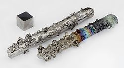

Название, символ, номер Вольфра́м / Wolframium (W), 74
Атомная масса
(молярная масса) 183,84(1) а. е. м. (г/моль)
Электронная конфигурация [Xe] 4f14 5d4 6s2
Радиус атома 137 пм
Химические свойства
Ковалентный радиус 170 пм
Радиус иона (+6e) 62 (+4e) 70 пм
Электроотрицательность 2,3 (шкала Полинга)
Электродный потенциал W ← W3+ 0,11 В
W ← W6+ 0,68 В
Степени окисления +2, +3, +4, +5, +6
Энергия ионизации
(первый электрон) 769,7 (7,98) кДж/моль (эВ)
Термодинамические свойства простого вещества
Плотность (при н. у.) 19,25 г/см³
Температура плавления 3695 K (3422 °C, 6192 °F)
Температура кипения 5828 K (5555 °C, 10031 °F)
Уд. теплота плавления 285,3 кДж/кг
52,31 кДж/моль
Уд. теплота испарения 4482 кДж/кг 824 кДж/моль
Молярная теплоёмкость 24,27 Дж/(K·моль)
Молярный объём 9,53 см³/моль
Кристаллическая решётка простого вещества
Структура решётки кубическая
объёмноцентрированная
Параметры решётки 3,160 Å
Температура Дебая 310 K
Прочие характеристики
Теплопроводность (300 K) 162,8 Вт/(м·К)